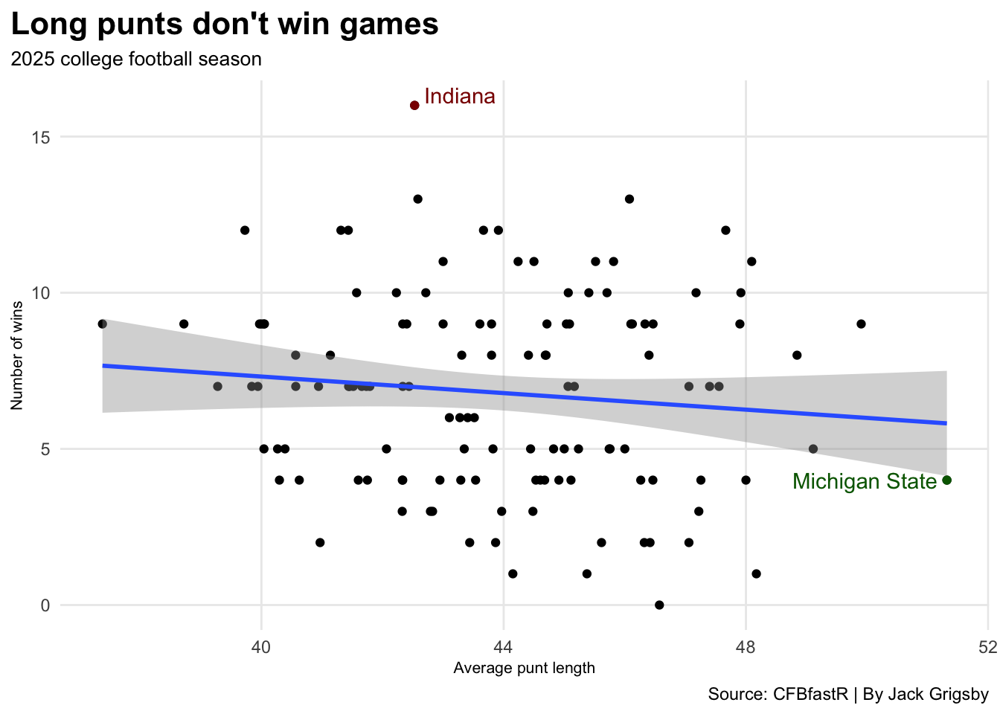
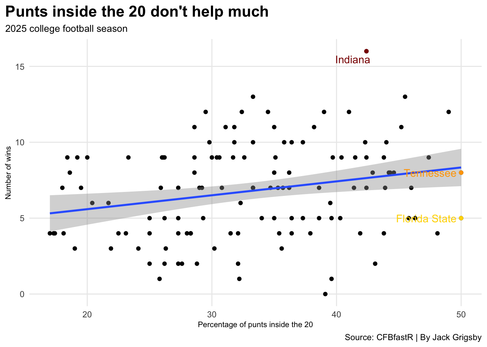
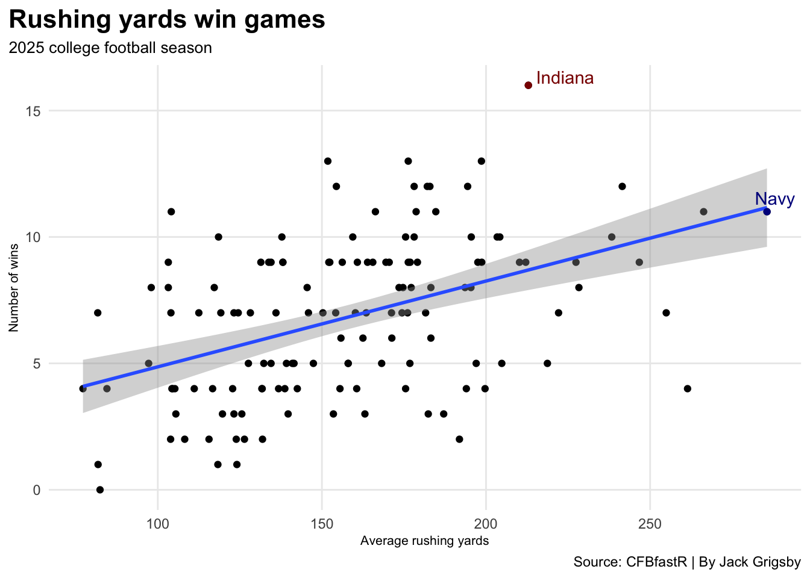
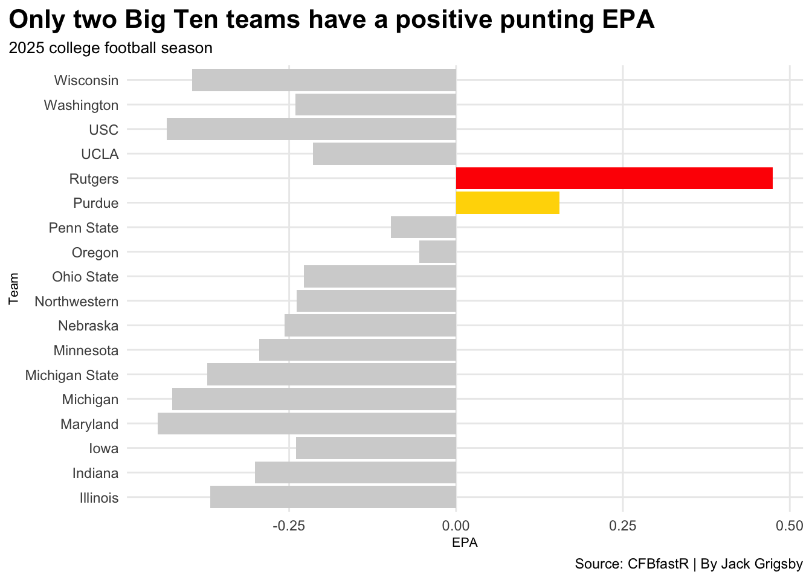

Does punting make a difference in college football?
collegefootball
Author
Jack Grigsby
Published
November 13, 2026
Having a good punter doesn’t help your favorite team win
Let me paint a picture for you. You’re a Nebraska football fan, and It’s rivalry week in college football. The Huskers are beating Iowa, 16-14, with less than two minutes remaining in the game.
However, it’s 4th-and-20 on your own 40-yard line, and Nebraska turns to its punter. Sophomore punter Archie Wilson boots it 55 yards to Iowa’s 5-yard line. He’s had three 50-plus-yard punts in the game, all landing beneath the Hawkeyes’ 20-yard line. Most people would say this would help the Huskers win because of yards per punt and field position. But would it really help the Nebraska win?
Let’s go back 14 years.
On Friday, Apr. 27, 2012, the Jacksonville Jaguars selected punter Bryan Anger with the 70th pick in the NFL draft. After Anger’s name was called, a graphic flashed on the screen, showing his collegiate punting metrics. Anger had 255 punts in college, 90 of which landed beneath the 20-yard line. American sports commentator Rich Eisen yelled, “We’ve got a punter! Let me tell you something, people: punters are people, too!”
But are they really? Do punters actually help your favorite team win in college football?
Unfortunately for Eisen, Anger and punters everywhere, the answer is not really. Good punting doesn’t help you win.
To see whether punters actually help you win in college football, we need to determine what makes a good punter. When most people judge a punter, they look at two things: total yards per punt and whether the ball lands inside the 20-yard line, because that’s better than a touchback and pins the opposing offense deep in its own territory.
Does having someone who punts longer lead to wins?
Let’s first look at a scatterplot that measures total yards per punt (x-axis) and total wins (y-axis).
Code
library(tidyverse)library(cfbfastR)library(gt)library(ggrepel) games <-read_csv("/Users/jackgrigsby/Downloads/footballlogs25 (16).csv") win_percent <- games |>group_by(team) |>summarise(games =n(),wins =sum(rslt =="W"),win_percent =round(mean(rslt =="W") *100, 1) ) punts <-load_cfb_pbp(2025) |>filter(punt ==1) punt_avg_length <- punts |>filter(yds_punted >0) |>group_by(pos_team) |>summarise(average =mean(yds_punted) ) plot_data_avg_length <- win_percent |>inner_join( punt_avg_length,by =c("team"="pos_team") ) highest_wins <- plot_data_avg_length |>filter(wins ==max(wins)) longest_avg_punt <- plot_data_avg_length |>filter(average ==max(average))ggplot() +geom_point(data=plot_data_avg_length, aes(x = average, y = wins)) +geom_smooth(data=plot_data_avg_length, aes(x = average, y = wins), method ="lm") +geom_point(data = highest_wins, aes(x = average, y = wins), color ="darkred") +geom_text_repel(data = highest_wins, aes(x = average, y = wins, label = team), color ="darkred") +geom_point(data = longest_avg_punt, aes(x = average, y = wins), color ="darkgreen") +geom_text_repel(data = longest_avg_punt, aes(x = average, y = wins, label = team), color ="darkgreen") +labs(title ="Long punts don't win games", subtitle ="2025 college football season", x ="Average punt length", y ="Number of wins",caption="Source: CFBfastR | By Jack Grigsby" ) +theme_minimal() +theme(plot.title =element_text(size =16, face ="bold"),axis.title =element_text(size =8), plot.subtitle =element_text(size=10), panel.grid.minor =element_blank(),plot.title.position ="plot" )

Michigan State had the best punter in terms of average punt length. Spartans junior Ryan Eckley punted the ball 51.32 yards per punt. However, Michigan State only had four wins in 2025. This plot shows that having a punter who punts far is actually more likely to be on a worse team.
A punter with a strong leg isn’t everything, though. If they kicked it into the end zone every time, the opposing offense would get the ball at the 20. Positioning matters just as much as total yards per punt. Pinning the opposing team deep helps defenses because the offense has less room to work with.
But does it actually help your team win? The data suggests it helps more than total yards per punt, but not as much as a more important metric, such as a running back who averages a high number of rushing yards per game.
Let’s take a look at whether punts that land beneath the 20-yard line lead to wins.
Code
punt_percentages <- punts |>group_by(pos_team) |>summarise(total_punts =n(),inside_20 =sum(yards_to_goal_end >80),percent_inside_20 =round(inside_20 / total_punts *100, 1), ) plot_data_inside_20 <- win_percent |>inner_join( punt_percentages,by =c("team"="pos_team") ) highest_wins <- plot_data_inside_20 |>filter(wins ==max(wins)) highest_percent_inside_20_tn <- plot_data_inside_20 |>filter(percent_inside_20 ==max(percent_inside_20)) |>filter(team =="Tennessee") highest_percent_inside_20_fl <- plot_data_inside_20 |>filter(percent_inside_20 ==max(percent_inside_20)) |>filter(team =="Florida State")ggplot() +geom_point(data=plot_data_inside_20, aes(x = percent_inside_20, y = wins)) +geom_smooth(data=plot_data_inside_20, aes(x = percent_inside_20, y = wins), method ="lm") +geom_point(data = highest_wins, aes(x = percent_inside_20, y = wins), color ="darkred") +geom_text_repel(data = highest_wins, aes(x = percent_inside_20, y = wins, label = team), color ="darkred") +geom_point(data = highest_percent_inside_20_tn, aes(x = percent_inside_20, y = wins), color ="orange") +geom_text_repel(data = highest_percent_inside_20_tn, aes(x = percent_inside_20, y = wins, label = team), color ="orange") +geom_point(data = highest_percent_inside_20_fl, aes(x = percent_inside_20, y = wins), color ="gold") +geom_text_repel(data = highest_percent_inside_20_fl, aes(x = percent_inside_20, y = wins, label = team), color ="gold") +labs( title ="Punts inside the 20 don't help much", subtitle ="2025 college football season", x ="Percentage of punts inside the 20", y ="Number of wins",caption="Source: CFBfastR | By Jack Grigsby" ) +theme_minimal() +theme(plot.title =element_text(size =16, face ="bold"),axis.title =element_text(size =8), plot.subtitle =element_text(size=10), panel.grid.minor =element_blank(),plot.title.position ="plot" )

Okay, there’s a slight positive correlation between positioning and wins, but is it as significant as a more important offensive metric, like average rushing yards per game?
No, not even close. Let’s see the difference.
Code
wins_and_rushing <- games |>group_by(team) |>summarise(wins =sum(rslt =="W"),average_yards_per_game =round(mean(rushing_yds), 1) ) highest_wins <- wins_and_rushing |>filter(wins ==max(wins)) highest_rushing_yards <- wins_and_rushing |>filter(average_yards_per_game ==max(average_yards_per_game))ggplot() +geom_point(data=wins_and_rushing, aes(x = average_yards_per_game, y = wins)) +geom_smooth(data=wins_and_rushing, aes(x = average_yards_per_game, y = wins), method ="lm") +geom_point(data = highest_wins, aes(x = average_yards_per_game, y = wins), color ="darkred") +geom_text_repel(data = highest_wins, aes(x = average_yards_per_game, y = wins, label = team), color ="darkred") +geom_point(data = highest_rushing_yards, aes(x = average_yards_per_game, y = wins), color ="darkblue") +geom_text_repel(data = highest_rushing_yards, aes(x = average_yards_per_game, y = wins, label = team), color ="darkblue") +labs(title ="Rushing yards win games", subtitle ="2025 college football season", x ="Average rushing yards", y ="Number of wins",caption="Source: CFBfastR | By Jack Grigsby" ) +theme_minimal() +theme(plot.title =element_text(size =16, face ="bold"),axis.title =element_text(size =8), plot.subtitle =element_text(size=10), panel.grid.minor =element_blank(),plot.title.position ="plot" )

As you can see, there’s a significant correlation between total rushing yards per game and winning. Better rushing teams tend to win more on average. Navy, a traditional run-heavy offense, had the highest rushing yards average in 2025 (285.6 per game) and ended the season with 11 wins.
Another thing that determines whether good punters lead to wins is a punter’s EPA (Expected Points Added).
EPA shows how a play’s outcome will impact the game’s result. If a play has a positive EPA, it means the outcome is projected to score the team points. If Ohio State junior running back Jeremiah Smith has a 12-yard rush on a 1st-and-10, the expected points for the next play will most likely increase.
It’s a matter of whether the play will increase or decrease expected points scored in a game.
But how does this relate to punting?
CBFfastR shows us each Big Ten punt’s EPA.
Code
big10_punts <- punts |>filter( ( pos_team =="Illinois"| pos_team =="Indiana"| pos_team =="Iowa"| pos_team =="Maryland"| pos_team =="Michigan"| pos_team =="Michigan State"| pos_team =="Minnesota"| pos_team =="Nebraska"| pos_team =="Northwestern"| pos_team =="Ohio State"| pos_team =="Oregon"| pos_team =="Penn State"| pos_team =="Purdue"| pos_team =="Rutgers"| pos_team =="UCLA"| pos_team =="USC"| pos_team =="Washington"| pos_team =="Wisconsin" ) ) big10_punt_epa <- big10_punts |>group_by(pos_team) |>summarise(total_punts =n(),average_punt_epa =round(mean(EPA), 3) ) rutgers_punt_epa <- big10_punt_epa |>filter(pos_team =="Rutgers") purdue_punt_epa <- big10_punt_epa |>filter(pos_team =="Purdue")ggplot() +geom_bar(data=big10_punt_epa, aes(x = pos_team, weight = average_punt_epa), fill="lightgrey") +geom_bar(data=rutgers_punt_epa, aes(x = pos_team, weight = average_punt_epa), fill="red") +geom_bar(data=purdue_punt_epa, aes(x = pos_team, weight = average_punt_epa), fill="gold") +coord_flip() +labs( title ="Only two Big Ten teams have a positive punting EPA", subtitle ="2025 college football season", x ="Team", y ="EPA",caption="Source: CFBfastR | By Jack Grigsby" ) +theme_minimal()+theme(plot.title =element_text(size =16, face ="bold"),axis.title =element_text(size =8), plot.subtitle =element_text(size=10), panel.grid.minor =element_blank(),plot.title.position ="plot" )

Out of all 18 Big Ten teams, only Purdue and Rutgers had a positive punting EPA, and both were below 0.5.
But how does punting EPA look across the rest of the conferences?
Most teams have negative punting EPA, and the team with the best punting EPA, West Liberty, has only 0.86, so the result of a punt doesn’t even project a point gained.
Although it may seem that punting helps win games in college football, that isn’t the case. No matter how well Wilson, Anger or any punter performs, they won’t really impact the game. Unfortunately for Eisen, punters aren’t people, too, in college football.